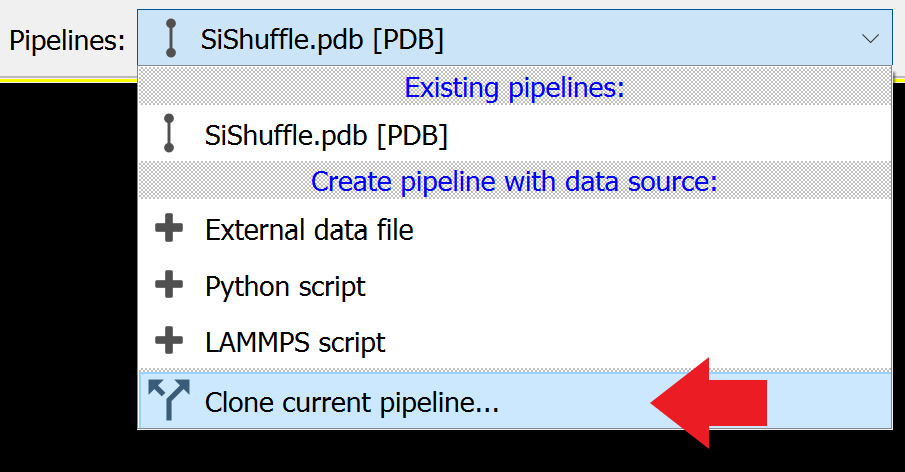
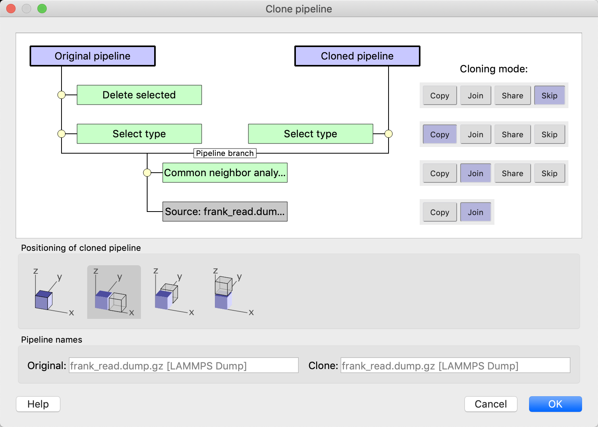
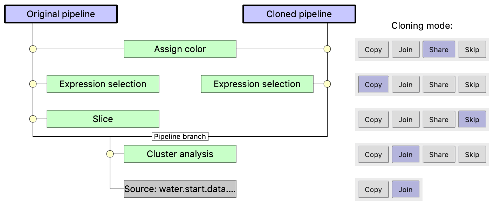
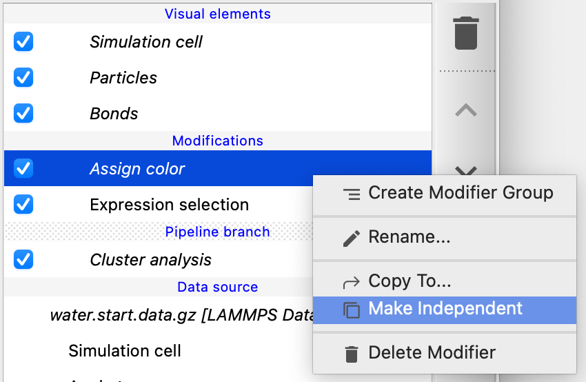
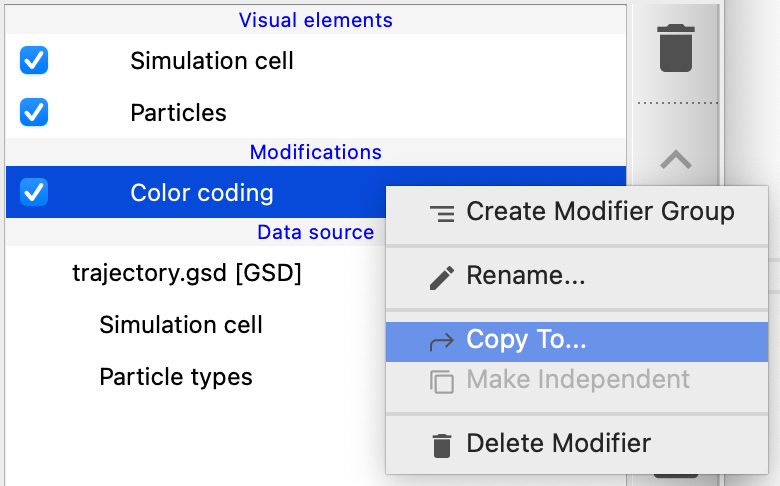
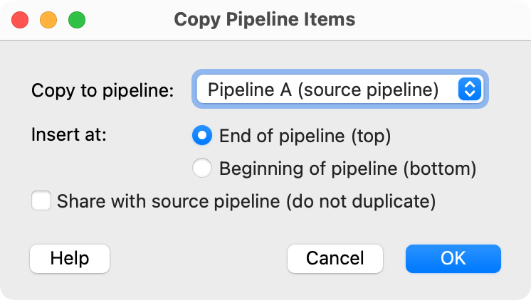

Branched and cloned pipelines pro
{kind=link}
The Clone Pipeline function of OVITO Pro lets you duplicate the current data pipeline in order to visualize multiple datasets side by side or to visualize the same dataset in several different ways in one picture. The function can be invoked from the pipeline selector widget depicted on the right, which is located in OVITO’s main toolbar.
The Clone Pipeline dialog will be displayed, letting you configure the cloning operation. Once you close the dialog by pressing Ok, the cloning operation is executed according to the settings you have made in the dialog.
After the pipeline has been cloned, both the new copy and the existing data pipeline will be part of the current visualization scene and you will now see two objects in the viewports. The pipeline selector widget in the main toolbar indicates which pipeline is the currently selected one and allows you to switch between the different pipelines of the scene. The currently selected pipeline is the one shown in the pipeline editor. You can also click on an object in the interactive viewports in order to select the pipeline associated with that object.
How pipeline cloning works
{kind=link}
A pipeline in OVITO consists of a data source (typically an external data file to feed the pipeline with input) and a linear sequence of modifiers that have been inserted into the pipeline. In the user interface of OVITO, the modifiers are typically laid out in a bottom-up fashion, with the data source at the bottom and the last modifier of the sequence at the top. The data source delivers an input dataset (e.g. particles or other kinds of data objects), which is then processed by the modifiers one after the other. The final result data leaving the pipeline is what gets displayed in the 3d viewports of OVITO.
When cloning a pipeline, the data source and/or the modifiers of the original pipeline typically get copied over to the new pipeline. However, for each of these parts, you can configure individually whether they should be duplicated or rather shared by the original and the cloned pipeline. This gives you a great deal of flexibility: If you decide, for example, that the two pipelines should share the same data source, then both pipelines will always be fed with the same input dataset. If you subsequently pick a different input file for any one of the pipelines, this change will affect the other pipeline as well. This synchronized mode can be useful, for example, to visualize the same input data in several different ways, typically by employing different modifiers in the two pipelines that share the same data source.
Another common use-case for OVITO’s pipeline cloning function is visualizing different input datasets side by side, always making sure that all modifier operations get applied in exactly the same way to both input datasets. In this case, you would choose to duplicate the data source during the cloning operation and let the two pipelines share the modifiers instead. Then the pipelines will get fed with different input datasets, but it is ensured that each dataset will pass through the exact same sequence of modification steps.
For any data source or modifier of the existing pipeline, you can choose between four different cloning modes in the Clone Pipeline dialog:
- Copy
This will create an independent copy of the original object. Changing the object’s parameters in either the original pipeline or the cloned pipeline will not affect the other pipeline.
- Join
The object will not be duplicated and the new pipeline will share the same object with the original pipeline. In fact, choosing this option results in a branched pipeline that starts at a single data source. Data flowing through the pipeline will be unique up to the branching point, i.e. the last modifier that was cloned using mode Join. Beyond the branching point, the two pipeline branches will be independent and can modify the data in different ways.
- Share
This cloning mode is only available for modifiers, not for the data source. It is a special variant of the Join mode providing some additional flexibility. The shared modifier becomes part of both pipelines and subsequently changing the modifier’s parameter will affect both pipelines in the same way. However, the shared modifier can act on different data in the two pipelines, because unlike in a branched pipeline setup, which is always restricted to a single unique data source, the two pipelines can have different sources and/or modifiers preceding the shared modifier.
- Skip
This option simply leaves a modifier out in the cloned pipeline.
Further options
The location where the output data appears in the three-dimensional scene can be controlled independently for each pipeline. Typically you don’t want the data of the cloned pipeline to appear in the same spatial location as the data of the original pipeline. This is why the Clone Pipeline dialog provides the option to displace the copied pipeline along the x, y, or z-axis so that the copy appears side by side with the original pipeline in the scene.
Note that you can change the positioning of a pipeline object at any time using the Move and Rotate tools found in OVITO’s main toolbar. Using these tools you can still adjust the exact positioning of either the original or the cloned pipeline later on (see here for more information).
By default OVITO names each pipeline after the filename that serves as input for the pipeline. The two input fields at the bottom of the Clone Pipeline dialog allow you to override this default naming scheme and assign custom names to the original and/or the cloned pipeline, which can be very helpful to differentiate the two pipelines in the user interface, in particular, if they share the same input file.
After cloning a pipeline
After cloning a pipeline, some modifiers or the data source may be shared between the original and the cloned pipeline. OVITO will indicate this in the user interface as we will see below.
For the following discussion, let us consider an example pipeline containing four modifiers, which are being cloned according to the following schematic picture:
{kind=link}
The pipeline’s data source and the first modifier (Cluster analysis) are reused in the cloned pipeline according to the selected mode Join. Thus, the two resulting pipelines will share the same upstream part. The Slice modifier is the first item for which a clone mode other than Join is selected. Thus, the cloned pipeline branches off before this modifier, which is being skipped in the cloned pipeline. Mode Copy has been selected for the Expression selection modifier. Accordingly, an independent copy of this modifier will be created and inserted into the cloned pipeline. This will enable you to change the selection expression in the second pipeline and select a different set of particles, for example. Finally, the Assign color modifier gets shared by both pipelines. That means the selected particles in both pipelines will always get assigned the same color.
{kind=link}
After the cloning operation has been executed, you will see the newly created pipeline in the pipeline editor.
The horizontal line labeled Pipeline branch indicates that the part below is shared by the current pipeline and other pipelines in the same scene. Inserting, removing, or changing modifiers below this line is thus going to affect these other pipelines as well.
Some of the items in the pipeline editor are rendered in italic font. With that, OVITO indicates that two or more pipelines share this entry. The Assign color modifier, for instance, was cloned using mode Share. It is now part of the original pipeline and the cloned pipeline simultaneously. Changing a parameter of this modifier would trigger a recomputation of both pipelines.
Let’s say you later realize that sharing the Assign color modifier was not the right idea. For instance, you may decide to assign different colors to the particles in the two pipelines. For “un-sharing” the modifier, OVITO provides the function Make Independent, which is accessible via the item’s context menu shown in the screenshot. This function replaces the shared Assign color modifier with an independent copy in the current pipeline. Subsequently, changing the modifier’s parameters will no longer implicitly affect other pipelines. You now get the possibility to use different parameter values in different pipelines.
Notice that the visual elements in the pipeline editor are also displayed using italic font. That’s because these visual elements are produced by the file data source in the upstream pipeline, i.e. in the branch common to both pipelines. While the underlying simulation data gets implicitly duplicated at pipeline branches (to enable different computational outputs of the two pipelines), the visual elements do not. A single set of visual elements remains responsible for rendering the outputs of the two pipelines.
Because these visual elements are shared objects, changing their parameters or turning them on or off affects the rendering of both datasets produced by the two pipelines. If this is not what you want, again you can use the function Make Independent to duplicate the visual elements. Subsequently, you can control the visual appearance of particles and bonds for the original and the cloned pipeline individually.
Copying modifiers between pipelines
 {kind=link}
{kind=link}
Select Copy to… from the context menu of a modifier to copy it from one pipeline to another pipeline in the same scene. OVITO displays a dialog box (see screenshot below), which lets you select the destination of the copy operation and the copying mode. Turn on the option Share with source pipeline to insert a reference to the original modifier into the other pipeline. Subsequently, both pipelines will share the same modifier, and changing the modifier’s parameters will affect the results of both pipelines. Turn off the option to perform a regular duplication, which produces an independent copy of the original modifier.
The Copy to… function may also be used to copy one or more modifiers within the same pipeline. This can be useful if you need to perform the same processing steps multiple times as part of a single pipeline (see also Modifier templates as an alternative approach).
In addition to modifiers, you can also copy the file source of the current pipeline to another pipeline in the scene, replacing the original data source in the destination pipeline.